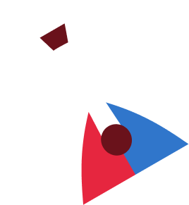
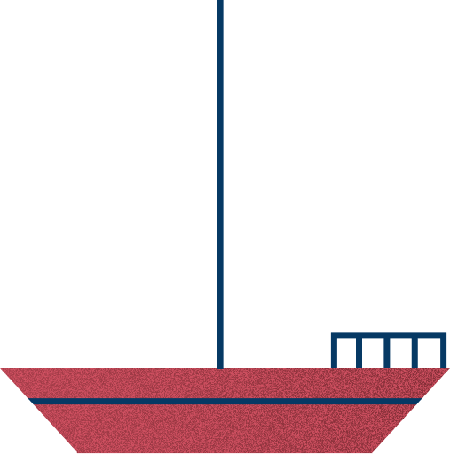
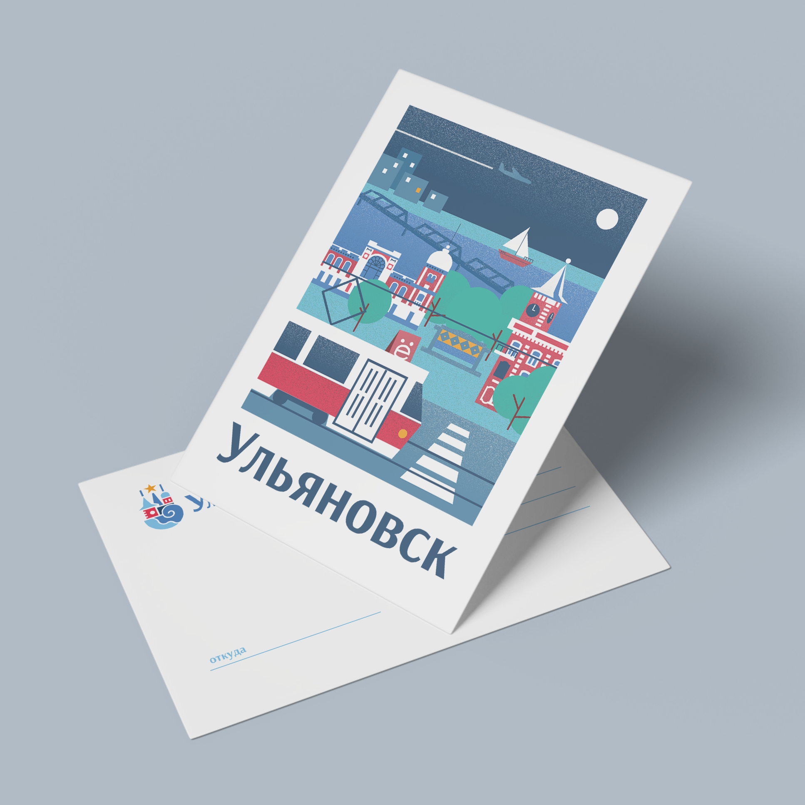

Ульяновск
город, где хочется летать
Карта центра города

 30 лет Великой Победы
30 лет Великой Победы
Заглушка описания — 30 лет Великой Победы

Музейбалалайки
Заглушка описания — Балаалйка

ЯхтингЗаглушка описания — Яхтинг
 Гостинница «Венец»
Гостинница «Венец»
Заглушка описания — Гостинница «Венец»
 Ленинский мемориал
Ленинский мемориал
Заглушка описания — Ленинский мемориал
 Музей И.А. Гончарова
Музей И.А. Гончарова
Заглушка описания — Музей И.А. Гончарова
 Памятник букве «Ё»
Памятник букве «Ё»
Заглушка описания — Памятник букве «Ё»
 Симбирцитовая Зала
Симбирцитовая Зала
Заглушка описания — Симбирцитовая Зала
 Спасско-Вознесенский собор
Спасско-Вознесенский собор
Заглушка описания — Спасско-Вознесенский собор
 Художественный музей
Художественный музей
Заглушка описания — Художественный музей
 Церковь Св. Марии
Церковь Св. Марии
Заглушка описания — Церковь Св. Марии
Ульяновск — больше, чем кажется
 Основан в 1648 году
Основан в 1648 году
 Площадь 316 км²
Площадь 316 км²
 614 тыс. жителей
614 тыс. жителей
 Город трудовой
Город трудовойдоблести
Ульяновск — это родина Ленина и город авиаторов, где история России чувствуется в каждом районе. Здесь переплетаются купеческий Симбирск с его старинными усадьбами и современный промышленный центр. Знаменитые мосты, авиационный музей под открытым небом, живописная набережная и особая волжская атмосфера делают Ульяновск уникальным местом, где прошлое встречается с настоящим.
Основан в 1648 году
Площадь 316 км²
614 тыс. жителей
Город трудовойдоблести
Сувениры
